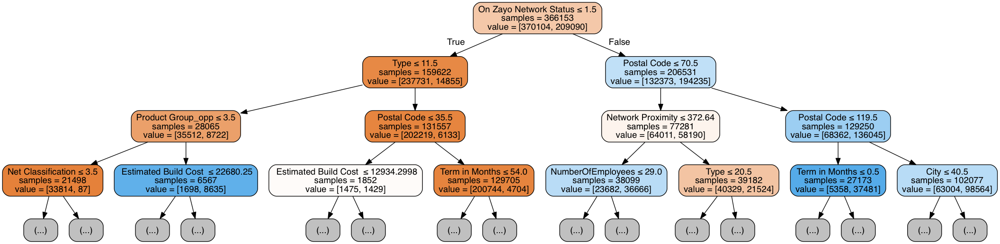

One of the first steps in our visualization process was to identify important features distinguishing won from lost opportunities. These features were used to inform what attributes of our data we visualized. We used a popular, supervised, machine learning algorithm called a random forest for predicting whether or not a sales opportunity will be won or lost. This algorithm is ideal in several ways: (1) it's robust to overfitting, (2) while still being very accurate, and (3) still highly interpretable.
In the following sections, we will give a outline of the steps taken to create our classifier - from picking features, to a more in-depth treatment of random forests, to evaluating accuracy and identifying important features.
Since a random forest is a supervised algorithm, we need to give it examples of won and lost opportunities to learn from. The algorithm looks at features of both won and lost opportunities and identifies which are best for distinguishing them from each other.
Before anything else, we added a new feature to our data called 'IsCommitted'. After speaking with representatives from Zayo, we learned that opportunities in stages '3 - Committed', '4 - Closed', or '5 - Accepted', were basically won deals. Our new feature 'IsCommitted' was true for any opportunity within one of those stages and false for any 'Closed - Lost' opportunities. This was the feature we asked our classifier to predict. Opportunities in stages '1 - Working' or '2 - Best Case' were held out from our training set. We used our classifier to predict the probability of winning those opportunities and these probabilities are shown in our map.
At first we considered all of the attributes of the given data. But attributes which we believed would be too unique (in other words, would hold no predictive power) were removed. These included features like 'Account ID', 'Opportunity ID', and 'Building ID'. The reduced feature set included:
We fed all of the above features of our won and lost opportunities to our classifier for training our random forest classifier.
A random forest is a group of decision trees, each trained on a subset of the features (a "weak learner"). When making a predicting the random forest takes a vote among each of its decision trees. The likelihood that an opportunity will be won or lost is the average vote across the whole collection of trees.
A single decision tree inside of our random forest looks something like this:
You can see at the root of the tree we make a decision on an opportunity's "On Zayo Network Status". If the decision is true, we move down the left of the tree. Otherwise, we move right. In predicting whether or not an opportunity is commited, we move down the each of the trees in our forest, answering questions about the opportunity's features. At the leaf of each tree a prediction is made.
Okay so, we've talked a lot about what features we use and our model, but this all doesn't mean very much unless our predictions are accurate right? In order to establish whether or not our classifier is accurate, we train on 80% of our data and test on the remaining 20% ("holdout method"). In doing so, we found our classifier to be 98.27% accurate on predictions of our holdout set.
Finally, now that we've established that our classifier is very accurate, we can have some good faith in the important features of our classifier. The discussion of this get's a little complicated, but the gist is that we can ask our algorithm to rank the features which give us the cleanest splits ("Gini impurity") among our 'IsCommitted' and not 'IsCommitted' opportunities.
Below is a bar chart of the most important features. The y-scale has been omitted, since it's the relative difference between bars that is more important. As you can see, the first three important features are 'Term in Months', 'On Zayo Network Status', and 'Total BRR'.